Quick Setup for P5
- Login to GitHub.com / Make an Account
- Once you have signed up for, verified your account, and are logged in. Go to this address https://github.com/Townclock/p5-GitSiteTest
- Click on the green "Use this template" button
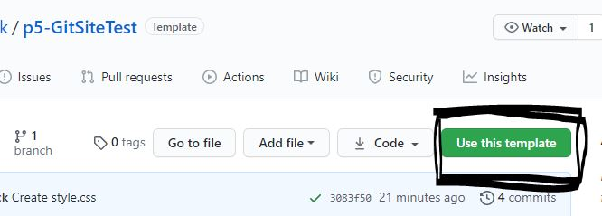
- choose a name for your project and create the repository
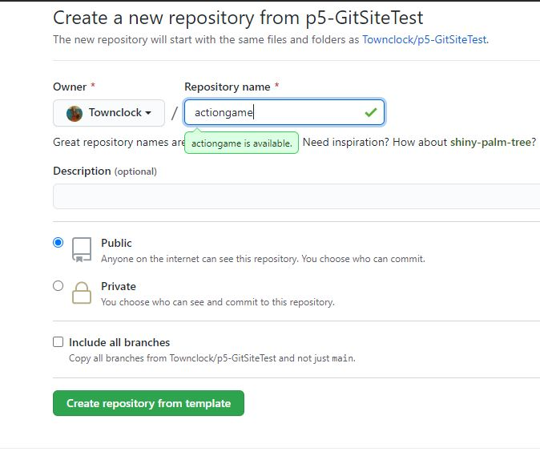
- in your project, click on sketch
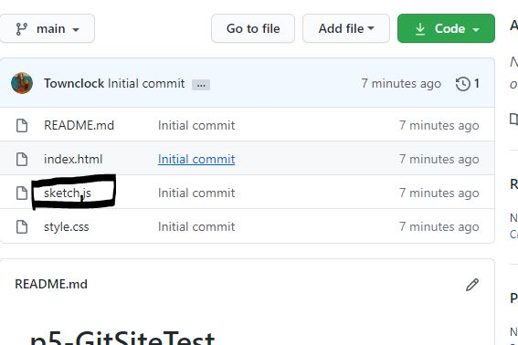
- copy and paste in your current sketch.js file
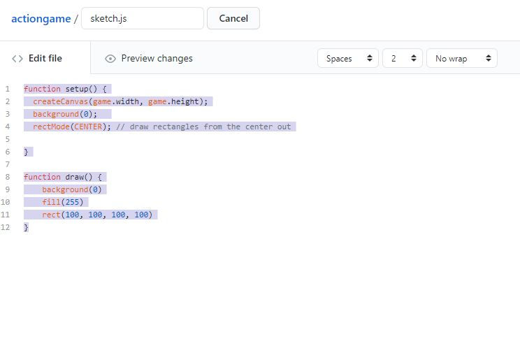
- commit your change
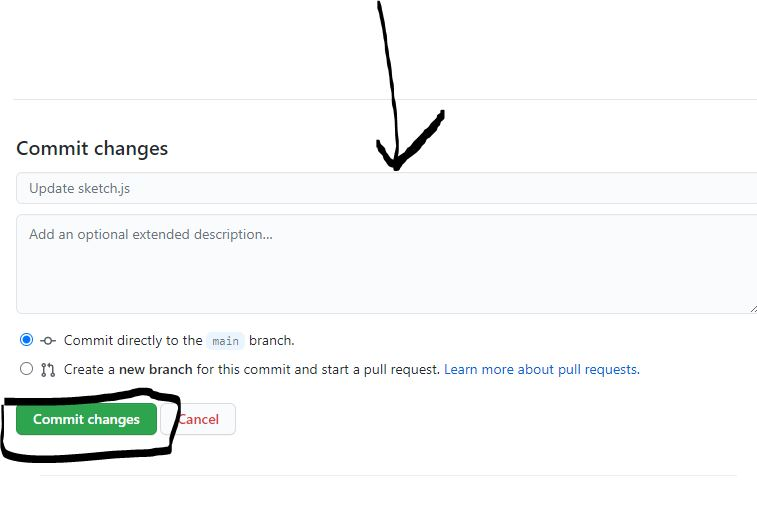
now you have a git repo that you can add people too
- go to settings

- click on the manage access option
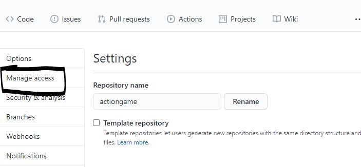
- click on the manage access option
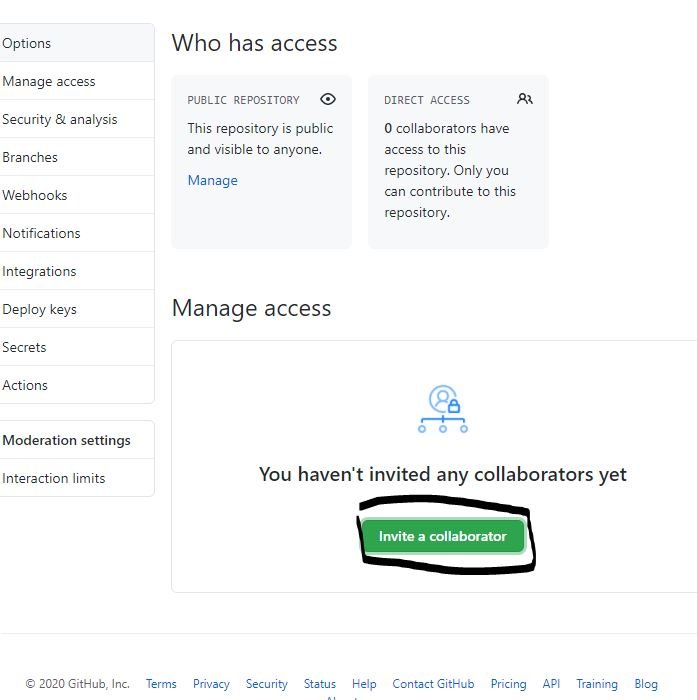
host on github pages
- go to options
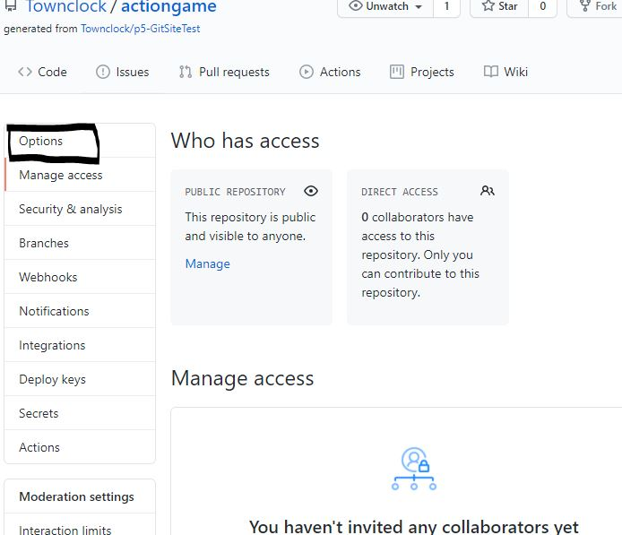
- scroll down the the github pages options
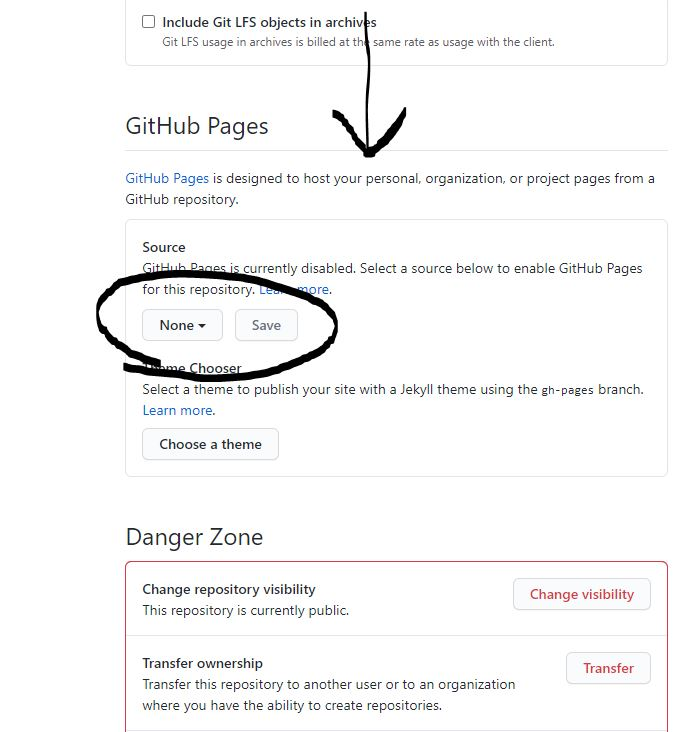
- select the main branch and save
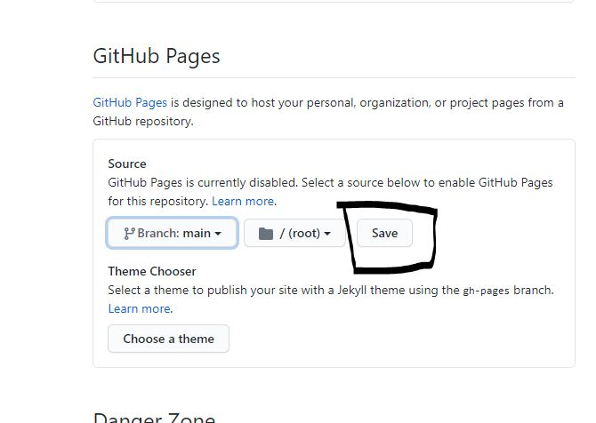
- now you have a link to the hosted page
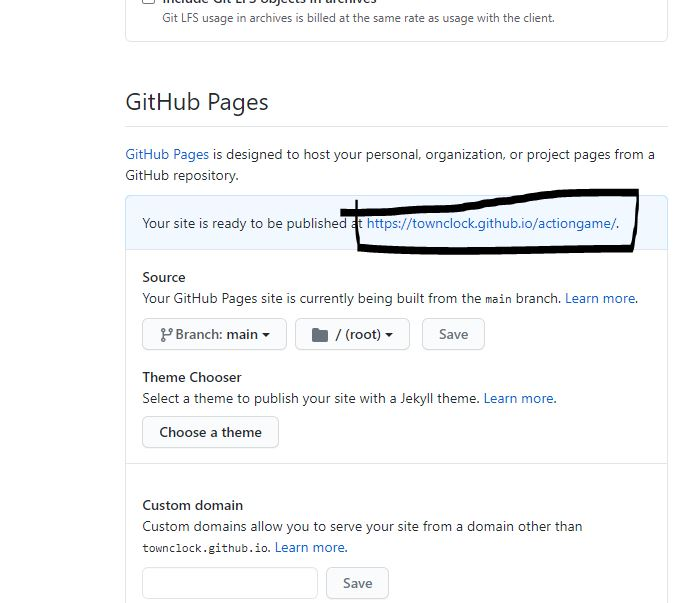
- it may take a few minutes for the page to run